2 辨析软件架构中的耦合
11 月 3 日，星期三，13:00
Penultimate Electronics 的首席架构师 Logan 打断了餐厅里一小群架构师关于分布式架构的讨论。
“Austen，你怎么又打石膏了？”
“不是石膏，只是夹板。”Austen 回答，“周末玩极限飞盘高尔夫时扭伤了手腕，差不多已经好了。”
“什么叫……算了。当我没问。我闯进来的这场激烈讨论是在聊什么？”
“为什么不能总是选微服务中的 Saga 模式来把事务串起来？”Austen 问，“这样架构师想把服务做多小都行。”
“可 Saga 不是必须使用编排吗？”Addison 问，“需要异步通信的时候怎么办？事务会变得多复杂？如果拆得太细，我们真的还能保证数据保真度吗？”
“你知道，”Austen 说，“如果使用企业服务总线，大部分事情都可以交给它管理。”
“我以为已经没人使用 ESB 了——这种事情不应该用 Kafka 吗？”
“它们根本不是同一种东西！”Austen 说道。
Logan 打断了愈发激烈的争论：“拿它们比较确实像是在比较苹果和橘子，但这些工具和方法没有一个是银弹。微服务这样的分布式架构很困难，尤其当架构师无法理清其中相互作用的全部力量时。我们需要一种方法或框架，帮助我们弄清架构里的难题。”
“好吧，”Addison 说，“不管采用什么方案，都必须尽可能解耦——我读到的一切都说架构师应当尽最大可能拥抱解耦。”
“照这个建议做下去，”Logan 说，“所有东西都会解耦到彼此无法通信——那样的软件可不好构建！与许多事情一样，耦合本身并不坏；架构师只需要知道如何恰当地运用它。实际上，我记得一位希腊哲学家说过一句相关的名言……”
万物皆有毒，无物不具毒性；唯有剂量，决定一物是否为毒。
—Paracelsus
架构师面对的最困难任务之一，是解开分布式架构中相互作用的各种力量与权衡。提出建议的人总在颂扬“松耦合”系统的好处，但架构师要如何设计一个任何东西都不与其他东西相连的系统？架构师通过细粒度微服务实现解耦，可编排、事务性和异步性随即成为巨大难题。泛泛的建议只说“解耦”，却没有说明怎样在实现这个目标的同时构建真正有用的系统。
架构师之所以难以决定粒度与通信方式，是因为没有清晰、普适的决策指南——不存在可直接套用到复杂现实系统的最佳实践。过去，架构师缺少正确的视角和术语，无法进行细致分析，也就无法针对具体情形确定最佳（或最不坏）的权衡组合。
为什么架构师一直难以在分布式架构中决策？毕竟，从上个世纪起我们就一直在构建分布式系统，使用的许多机制也相同，例如消息队列和事件。为什么到了微服务时代，复杂度会大幅上升？
答案在于微服务的基础理念，而这一理念受到了限界上下文概念的启发。构建能够对限界上下文建模的服务，要求架构师对分布式系统的设计方式做一项细微却重要的改变：事务性如今成为一等架构关注点。在微服务出现之前，架构师设计的许多分布式系统通常让事件处理器连接到同一个关系数据库，由数据库处理完整性、事务等细节。把数据库移入服务边界，也就把数据问题变成了架构问题。
正如前文所说，“软件架构”就是那些无法通过 Google 找到答案的东西。现代架构师必须掌握的一项技能，是进行权衡分析。架构权衡分析方法（Architecture Trade-off Analysis Method，ATAM）等框架已经存在数十年，却没有聚焦架构师每天真正面对的问题。
本书关注架构师如何针对自身独特情境下的各种场景进行权衡分析。与架构中的许多事情一样，建议本身很简单；难点潜藏在细节中，尤其是困难的部分彼此纠缠之后，各个部分就很难被看见和理解，如图 图 2.1 所示。
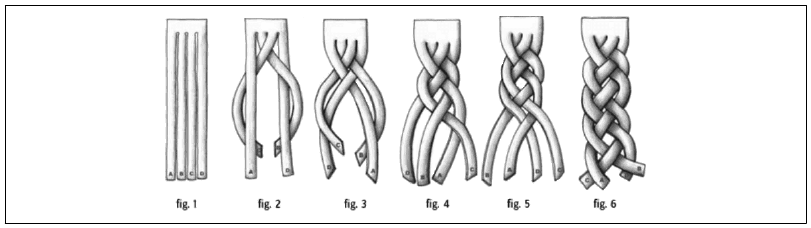
面对纠缠的问题时，架构师难以进行权衡分析，因为很难分离各项关注点，也就无法独立考察它们。因此，权衡分析的第一步，是解开问题的各个维度：分析哪些部分彼此耦合，以及这种耦合会对变更产生什么影响。为此，本书采用对“耦合”最简单的定义：
- 耦合
-
如果软件系统中的一个部分发生变化时，可能导致另一个部分也必须变化，那么这两个部分就是耦合的。
软件架构经常产生多维问题，其中多种力量以相互依赖的方式共同作用。架构师要分析权衡，必须首先确定哪些力量需要彼此权衡。
因此，我们对现代软件架构权衡分析的建议是：
- 找出哪些部分纠缠在一起。
- 分析它们如何彼此耦合。
- 确定变更对相互依赖系统的影响，以评估权衡。
步骤虽然简单，难点却潜藏在细节中。为了展示如何实际使用这个框架，我们选择分布式架构中最困难、也可能最具普遍性的问题之一——它与微服务有关：
架构师应当如何确定微服务的大小和通信方式？
确定微服务的恰当大小似乎是一个无处不在的问题：服务过小，会产生事务与编排问题；服务过大，又会产生伸缩与分布问题。
本书余下内容会逐一解开回答这个问题时必须考虑的众多方面。我们会提出新的术语，以区分相似却不同的模式，并给出应用这些模式及其他模式的实践案例。
不过，本书更高层的目标，是通过案例驱动的技术，教你为自身领域内的独特问题构建权衡分析。我们先从分布式架构中第一次重要的力量拆解开始：定义架构量子，以及静态耦合和动态耦合两类耦合。
2.1 架构量子
量子一词当然被广泛用于物理学的量子力学领域，但本书作者选择它的理由，与物理学家当初采用它的理由相同。Quantum 源自拉丁语 quantus，意为“多大”或“多少”。在物理学借用这个词之前，法律界用它表示“要求或允许的数量”，例如需要支付的损害赔偿额。这个词也出现在数学的拓扑学领域，用于研究一族形状的性质。由于它源自拉丁语，单数为 quantum，复数为 quanta，类似于 datum/data 的对应关系。
架构量子度量软件架构中拓扑和行为的多个方面，这些方面与各部分如何连接和通信有关：
- 架构量子
-
架构量子是一个可独立部署的制品，具有高功能内聚、高静态耦合以及同步动态耦合。一个常见例子，是工作流中设计良好的微服务。
- 静态耦合
-
表示静态依赖如何通过契约在架构中解析。这些依赖包括操作系统、通过传递依赖管理交付的框架和/或库，以及让量子得以运行所需的其他任何运行条件。
- 动态耦合
-
表示多个量子在运行期如何通信，既可以是同步通信，也可以是异步通信。因此，针对这些特征的适应度函数必须持续运行，通常要利用监控工具。
静态耦合与动态耦合看似相似，架构师却必须区分其中两项重要差异。一个简单的理解方式是：静态耦合描述服务如何连接起来，动态耦合则描述服务在运行期如何互相调用。
例如，在微服务架构中，一个服务必须包含数据库等依赖组件，这代表静态耦合——没有所需数据，服务就无法运行。在某个工作流执行期间，该服务可能调用其他服务，这代表动态耦合。除了这个运行期工作流之外，两个服务都不要求另一个必须存在才能工作。因此，静态耦合分析运行依赖，动态耦合分析通信依赖。
这些定义包含一些重要特征，下面逐一详细介绍，因为它们会影响本书中的大多数示例。
2.1.1 可独立部署
可独立部署隐含了架构量子的多个方面：每个量子代表特定架构中的一个独立部署单元。因此，单体架构——作为单个单元进行部署的架构——按定义只有一个架构量子。在微服务等分布式架构中，开发人员倾向于让服务可以独立部署，而且往往实现高度自动化。因此，从独立部署的角度看，微服务架构中的一个服务代表一个架构量子——但仍取决于下一节讨论的耦合情况。
让每个架构量子代表架构中的一项可部署资产，有几个实际用途。
第一，架构量子所表示的边界，为架构师、开发人员和运维人员提供了通用语言。各方都能理解正在讨论的共同范围：架构师理解耦合特征，开发人员理解行为范围，运维团队理解部署特征。
第二，架构量子代表架构师在分布式架构中追求适当服务粒度时必须考虑的一项力量——静态耦合。在微服务架构中，开发人员经常面对一个难题：怎样的服务粒度能提供最优的权衡组合？其中有些权衡围绕可部署性展开：这个服务需要怎样的发布节奏，可能影响哪些其他服务，涉及哪些工程实践，等等。架构师若能准确理解分布式架构中的部署边界位于何处，就会获益良多。第 7 章会讨论服务粒度及其相关权衡。
第三，独立部署迫使架构量子把数据库等常见耦合点纳入考虑。大多数架构讨论为了方便，会忽略数据库和用户界面等问题，但现实系统通常必须处理它们。因此，任何使用共享数据库的系统都不符合架构量子的独立部署准则，除非数据库与应用始终步调一致地部署。许多分布式系统原本可以拥有多个量子，但如果共享一个拥有自身部署节奏的公共数据库，就无法满足独立部署这一条件。
可见，只考虑部署边界并不能单独提供有用的度量。架构师还应考虑架构量子的第二项准则——高功能内聚，从而把架构量子限制在有意义的范围内。
2.1.2 高功能内聚
高功能内聚从结构上指相关元素——类、组件、服务等——彼此接近。计算机科学家在历史上定义了多种内聚类型；这里把范围限定在通用的模块上，而模块依据平台不同，可以表现为类或组件。从领域角度看，高功能内聚的技术定义与领域驱动设计中限界上下文的目标相重合：实现某个特定领域工作流的行为和数据。
单从独立部署来看，一个巨型单体架构也符合架构量子的定义。但它几乎肯定不具备高功能内聚，反而包含整个系统的全部功能。单体越大，就越不可能只拥有单一的功能内聚性。
理想情况下，微服务架构中的每项服务都对单一领域或工作流建模，因此表现出高功能内聚。这里的内聚并不关注多个服务如何交互完成工作，而是关注一项服务相对于另一项服务有多独立、又有多耦合。
2.1.3 高静态耦合
高静态耦合意味着架构量子内部的元素紧密连接在一起，这实际上是契约的一个方面。架构师通常会把 REST 或 SOAP 之类的东西视为契约格式，但方法签名和运行依赖——例如通过 IP 地址或 URL 形成的耦合点——同样代表契约。因此，契约本身也是架构难点。第 13 章会讨论涉及各类契约的耦合问题，包括如何选择合适的契约。
架构量子在一定程度上是静态耦合的度量，而且对大多数架构拓扑而言，这项度量很简单。下面的图采用《软件架构基础》中介绍的架构风格，并标明了架构量子的静态耦合。
任何单体架构风格都必然只有一个量子，如图 图 2.2 所示。
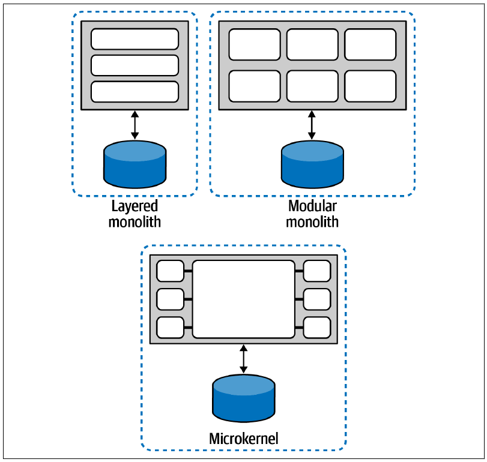
任何作为单一单元部署并使用单一数据库的架构，都只有一个量子。架构量子的静态耦合度量包含数据库，因此，依赖单一数据库的系统不可能拥有多个量子。由此可见，架构量子的静态耦合度量能够识别整个架构中的耦合点，而不只识别开发中软件组件内部的耦合点。大多数单体架构都包含一个让量子数量固定为一的耦合点，通常就是数据库。
分布式架构经常在组件层面体现解耦。先来看图 图 2.3 所示的基于服务的架构。
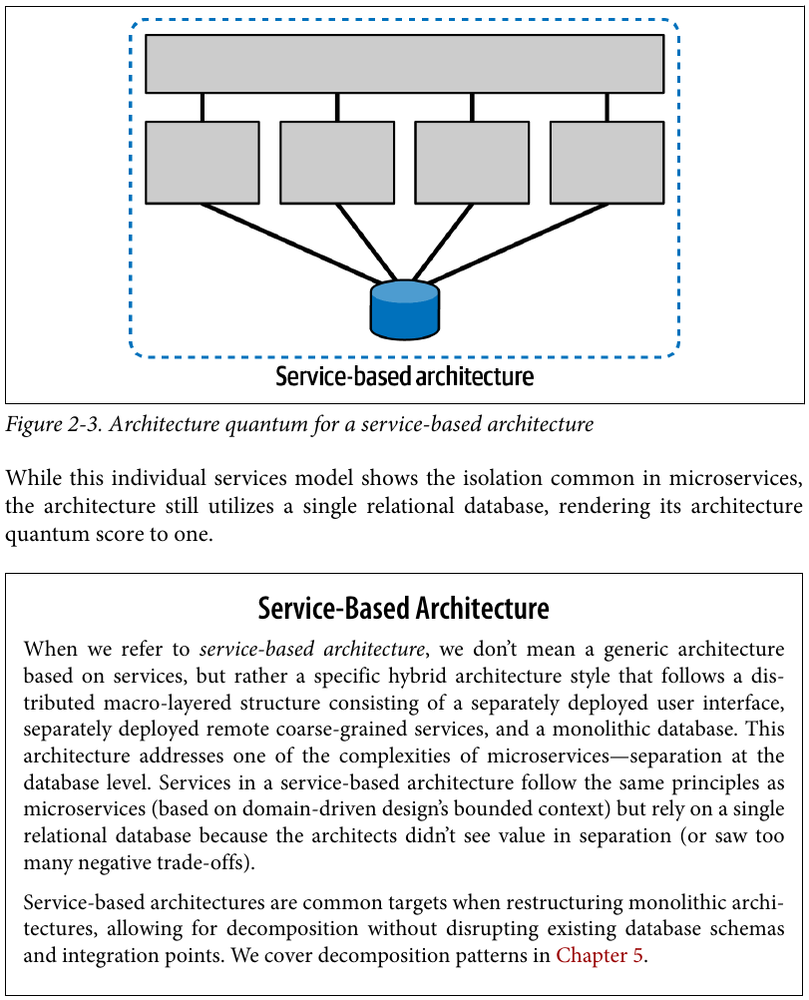
尽管这个独立服务模型表现出微服务中常见的隔离，整个架构仍然使用一个关系数据库，因此架构量子数量依然为一。
本书所说的基于服务的架构，并不是泛指一切以服务为基础的架构，而是一种特定的混合架构风格。它采用分布式宏观分层结构，由独立部署的用户界面、独立部署的远程粗粒度服务以及单体数据库组成。
这种架构处理了微服务的一项复杂性——数据库层面的分离。基于服务的架构中的服务遵循与微服务相同的原则，以领域驱动设计的限界上下文为基础；但它仍依赖单一关系数据库，因为架构师认为拆分数据库没有价值，或者会带来太多负面权衡。
重构单体架构时，经常把基于服务的架构作为目标。这样既能分解应用，又不必破坏现有数据库模式与集成点。第 5 章会介绍分解模式。
到目前为止，所有拓扑的架构量子静态耦合度量结果都是一。分布式架构创造了拥有多个量子的可能，却不保证一定如此。例如，中介者风格的事件驱动架构始终会被评估为单一架构量子，如图 图 2.4 所示。
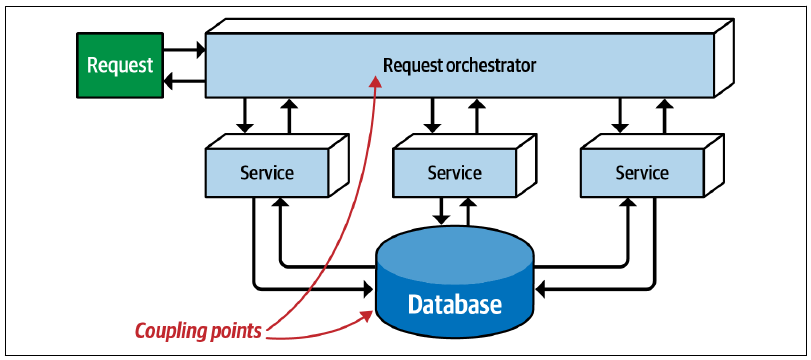
这种风格虽然代表分布式架构，却有两个耦合点把它推向单一架构量子：一个是与前述单体架构相同的数据库，另一个是请求编排器本身。凡是架构正常工作所必需的整体性耦合点，都会围绕自己形成一个架构量子。
代理者式事件驱动架构没有中心中介者，耦合程度更低，但这并不保证完全解耦。请看图 图 2.5 所示的事件驱动架构。
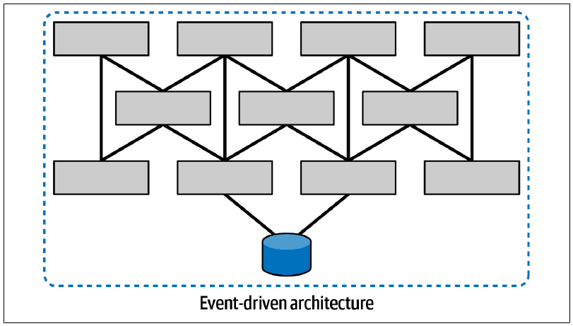
尽管没有中心中介者，这个代理者式事件驱动架构仍然只有一个架构量子，因为所有服务都使用同一个关系数据库；数据库充当了公共耦合点。架构量子的静态分析所回答的问题是：“要启动这项服务，架构中的这项依赖是否必不可少？”即使某些事件驱动架构服务并不访问数据库，只要它们依赖那些会访问数据库的服务，就会成为架构量子静态耦合的一部分。
那么，在不存在公共耦合点的分布式架构中，情况又如何？请看图 图 2.6 所示的事件驱动架构。
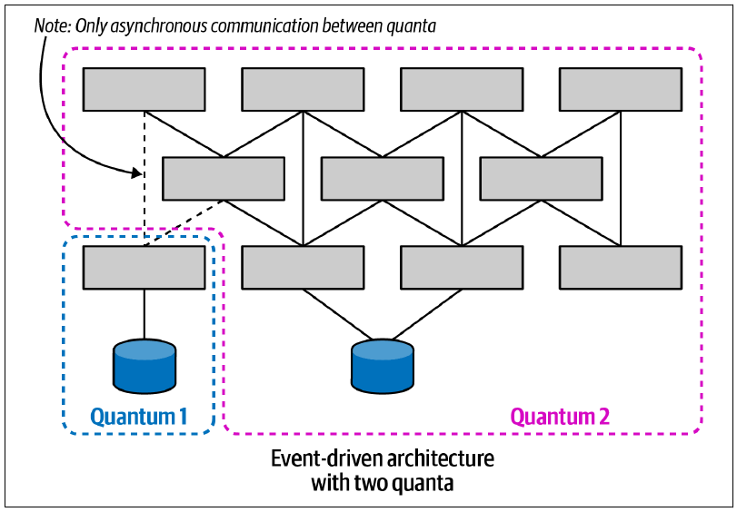
架构师为这个事件驱动系统设计了两个数据存储，两组服务之间没有静态依赖。注意，任一架构量子都能在类似生产环境的生态系统中运行。它可能无法参与系统要求的全部工作流，但可以成功启动并正常工作——在其架构范围内发送和接收请求。
架构量子的静态耦合度量，会评估架构组件与运行组件之间的耦合依赖。因此，操作系统、数据存储、消息代理、容器编排以及其他所有运行依赖，都会成为架构量子的静态耦合点；这些耦合点使用可能最严格的契约。第 13 章会进一步说明契约在架构量子中的作用。
微服务架构风格包含高度解耦的服务，也包括数据依赖的解耦。这类架构的设计者倾向于高度解耦，并谨慎避免在服务之间建立耦合点，让每项服务都能形成自己的量子，如图 图 2.7 所示。
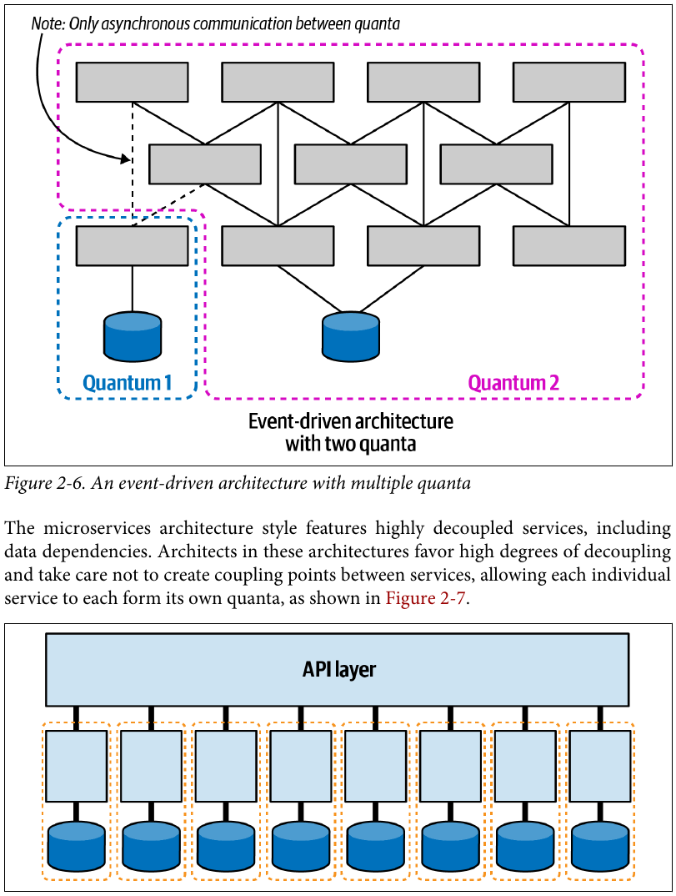
每项服务作为一个限界上下文，可以拥有自己的一组架构特征——例如，一项服务的可伸缩性或安全性可以高于另一项服务。这种细粒度的架构特征作用范围，是微服务架构风格的一项优势。高度解耦使负责某项服务的团队能够尽可能快速地推进，而不必担心破坏其他依赖。
不过，如果系统与用户界面紧密耦合，整个架构会形成一个架构量子，如图 图 2.8 所示。
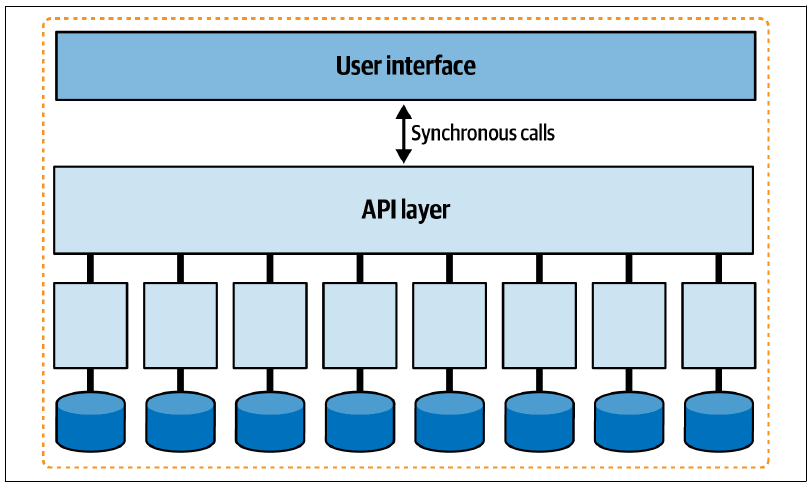
用户界面会在前端与后端之间产生耦合点；如果后端的某些部分不可用，大多数用户界面都无法正常工作。
此外，如果所有服务都必须在单一用户界面中协同工作，架构师很难为每项服务设计不同水平的运行期架构特征，例如性能、规模、弹性和可靠性。同步调用时，这个问题尤其明显；下一节“动态量子耦合”会进一步说明。
架构师也可以利用异步性设计用户界面，避免在前端与后端之间建立耦合。许多微服务项目正在采用微前端框架构建用户界面元素。在这种架构中，代表服务进行交互的用户界面元素由服务自身发出；用户界面表面就像一张画布，各种界面元素可以出现在上面。它还促成组件之间通常基于事件的松耦合通信。图 图 2.9 展示了这种架构。
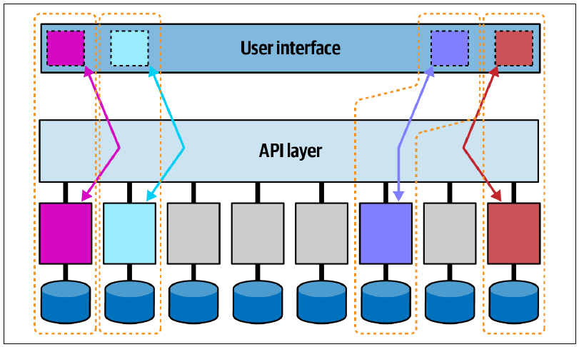
在这个例子中，四项带颜色的服务及其对应微前端分别形成架构量子；这些服务可以具有不同的架构特征。
架构中的任何耦合点，从量子的角度看都可能形成静态耦合。图 图 2.10 展示了两个系统共享数据库所产生的影响。
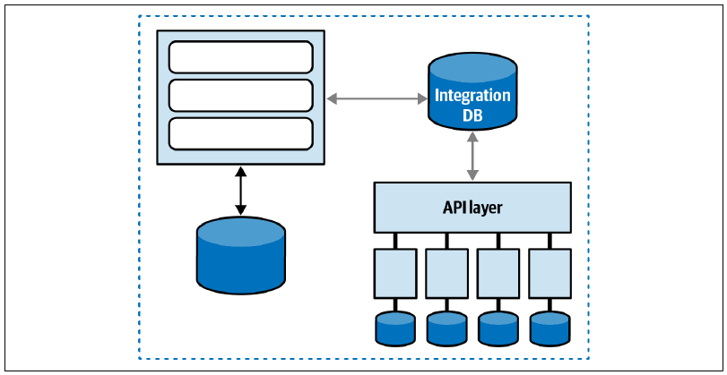
即使面对包含集成架构的复杂系统，对静态耦合的分析也能提供宝贵见解。理解遗留架构时，一种越来越常见的架构技术，是绘制静态量子图，说明各部分如何“连接”起来。这有助于判断变更会影响哪些系统，也提供了一种理解架构，并可能对其解耦的方式。
静态耦合只是分布式架构中相互作用力量的一半，另一半是动态耦合。
2.1.4 动态量子耦合
架构量子定义的最后一部分，是运行期的同步耦合。换言之，它描述多个架构量子相互交互、在分布式架构中组成工作流时的行为。
服务之间的调用方式会带来困难的权衡决策，因为它形成了一个多维决策空间，受到三项相互关联的力量影响：
- 通信
-
指连接使用何种同步性：同步或异步。
- 一致性
-
描述工作流通信是否要求原子性，或者能否采用最终一致性。
- 协调
-
描述工作流是使用编排器，还是由服务通过编舞方式通信。
2.1.4.1 通信
两项服务彼此通信时，架构师必须回答的一项基本问题是：通信应当同步还是异步？
同步通信要求请求方等待接收方响应，如图 图 2.11 所示。
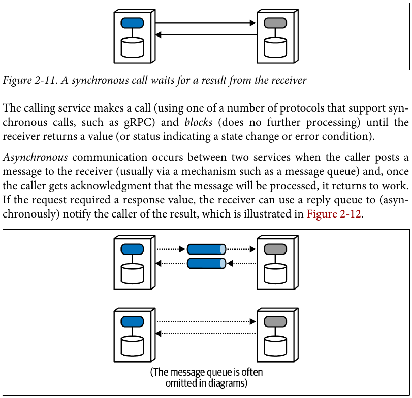
调用服务使用支持同步调用的某种协议（例如 gRPC）发出调用，随后阻塞——不再进行后续处理——直到接收方返回一个值，或者返回表示状态变化或错误情况的状态。
两项服务进行异步通信时，调用方把消息发送给接收方，通常通过消息队列等机制。调用方一旦得到“消息将被处理”的确认，就回去继续工作。如果请求需要返回值，接收方可以使用回复队列，以异步方式把结果通知调用方，如图 图 2.12 所示。
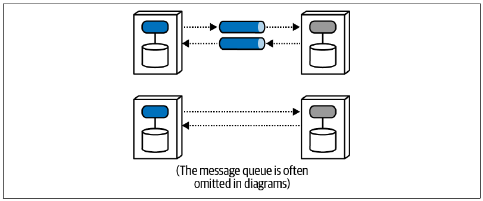
调用方把消息发到消息队列，然后继续处理，直到接收方通过回调通知所请求的信息已经可用。架构师通常使用消息队列实现异步通信；图 图 2.12 上半部分用灰色圆柱形管道表示消息队列。但队列十分常见，而且会给图增加视觉噪声，所以许多架构师像下半部分那样省略它。当然，架构师也可以使用各种库或框架，在没有消息队列的情况下实现异步通信。这两种画法都表示异步消息；第二种只是视觉速记，包含的实现细节更少。
架构师选择服务通信方式时，必须考虑重要的权衡。通信决策会影响同步、错误处理、事务性、可伸缩性和性能。本书余下内容会深入讨论其中许多问题。
2.1.4.2 一致性
一致性指通信调用必须遵守多严格的事务完整性。光谱的一端是原子事务——要求请求处理期间保持一致性的全有或全无事务；另一端则是不同程度的最终一致性。
让多个服务共同参与一项全有或全无的事务，是分布式架构中最难建模的问题之一，因此一般建议尽量避免跨服务事务。第 6、9、10 和 12 章会讨论一致性，以及数据与架构的交汇。
2.1.4.3 协调
协调指通信所建模的工作流需要多大程度的协调。微服务有两种常见的通用模式：编排与编舞，第 11 章会介绍它们。简单工作流——例如单项服务响应一项请求——无须从这个维度特别考虑；但工作流越复杂，对协调的需求就越大。
通信、一致性和协调这三项因素共同影响架构师必须作出的重要决策。关键在于，架构师不能孤立地选择其中任何一项；每个选项都会对其他选项产生“引力”。例如，在采用中介者的同步架构中，事务性更容易实现；而最终一致、异步、采用编舞方式的系统能够实现更高的伸缩水平。
把这些力量视为彼此关联，就形成了图 图 2.13 所示的三维空间。
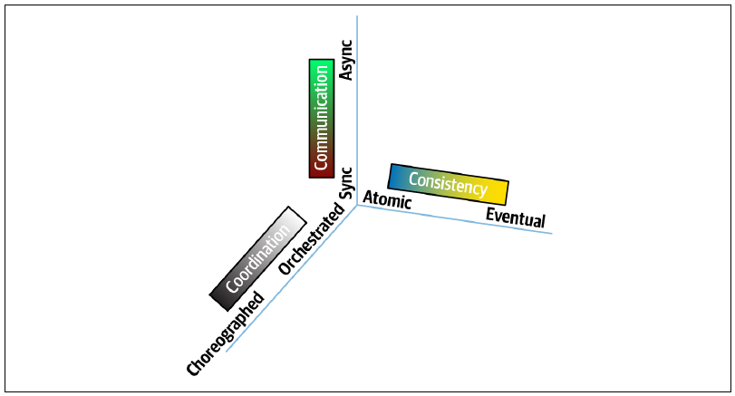
服务通信中每项起作用的力量都表现为一个维度。对于某项具体决策，架构师可以在空间中标出一个位置，表示这些力量的强弱。
架构师清楚理解特定情形中起作用的力量之后，就能建立权衡分析的准则。对于动态耦合，表 表格 2.1 根据八种可能的组合，为识别基本模式名称提供了一个框架。
| 模式名称 | 通信 | 一致性 | 协调 | 耦合程度 |
|---|---|---|---|---|
| 史诗传奇（sao） | 同步 | 原子 | 编排 | 非常高 |
| 电话传话传奇（sac） | 同步 | 原子 | 编舞 | 高 |
| 童话传奇（seo） | 同步 | 最终一致 | 编排 | 高 |
| 时间旅行传奇（sec） | 同步 | 最终一致 | 编舞 | 中等 |
| 奇幻小说传奇（aao） | 异步 | 原子 | 编排 | 高 |
| 恐怖故事（aac） | 异步 | 原子 | 编舞 | 中等 |
| 并行传奇（aeo） | 异步 | 最终一致 | 编排 | 低 |
| 选集传奇（aec） | 异步 | 最终一致 | 编舞 | 非常低 |
要充分理解这个矩阵，必须先分别研究每个维度。因此，后续章节会帮助你建立背景知识，理解通信、一致性和协调各自的权衡，然后在第 12 章把它们重新纠缠起来。
第一部分余下各章会聚焦静态耦合，帮助读者理解分布式架构中相互作用的多个维度，包括数据所有权、事务性和服务粒度。第二部分“重新组合”则聚焦动态耦合，帮助读者理解微服务中的通信模式。
2.2 Sysops Squad 传奇：理解架构量子
11 月 23 日，星期二，14:32
Austen 一反常态地满脸不悦，来到 Addison 的办公室。
“嘿，Addison，能打扰你一分钟吗？”
“当然，怎么了？”
“我一直在读架构量子的东西，可我就是……搞……不……懂！”
Addison 笑了：“我明白你的感受。它还只是抽象概念时，我也很难理解；但把它落实到具体事物上，就会发现它提供了一组很有用的视角。”
“什么意思？”
“嗯，”Addison 说，“架构量子基本上是用架构术语定义 DDD 的限界上下文。”
“那为什么不直接使用‘限界上下文’？”Austen 问。
“限界上下文在 DDD 中有明确的定义。如果硬给它加入架构方面的含义，人们就得不停地区分。两者相似，却不是同一个东西。架构量子定义的第一部分——功能内聚与独立部署——确实符合基于限界上下文的服务。但架构量子的定义更进一步，识别出了不同类型的耦合；这就是静态和动态发挥作用的地方。”
“这究竟是怎么回事？耦合不就是耦合吗？为什么要区分？”
“原来，许多不同的关注点分别围绕不同的耦合类型展开。”Addison 说，“先看静态耦合。我喜欢把它理解为各部分如何连接。还有一种理解方式：想想我们正在目标架构中构建的某项服务。要启动这项服务，需要哪些连接？”
“它用 Java 编写，使用 Postgres 数据库，运行在 Docker 中——就这些，对吧？”
“你漏掉了许多东西。”Addison 说，“假设现有设施一无所有，要从零开始构建这项服务呢？它使用 Java，同时还使用 Spring Boot，以及大约十五到二十个不同的框架和库，对吧？”
“没错，可以查看 Maven POM 文件来找出所有这些依赖。还有什么？”
“静态量子耦合背后的概念，是正常运行所必需的连接。我们使用事件在服务之间通信——事件代理怎么办？”
“但那不是动态部分吗？”
“代理的存在不是。如果我要启动的服务——更宽泛地说，架构量子——依靠消息代理才能运行，代理就必须存在。服务通过代理调用另一项服务时，才进入动态一侧。”
“好，我明白了。”Austen 说，“如果思考从零开始启动它需要哪些东西，那就是静态量子耦合。”
“正是如此。而且仅凭这些信息就已经非常有用了。我们最近出于防御目的，为每项服务绘制了静态量子耦合图。”
Austen 笑了：“出于防御目的？你是说……”
“我们在做可靠性分析，想确定：如果我改变这个东西，可能破坏什么？这里的‘东西’可以是架构或运维中的任何事物。他们在设法降低风险——改变一项服务时，要知道必须测试什么。”
“懂了——这就是静态量子耦合。我能看出这个视角为什么有用。它还显示团队可能怎样彼此影响，确实很有价值。有没有可以下载的工具，能自动为我们算出来？”
“要是真有就好了！”Addison 笑道，“可惜，没有哪个恰好拥有与我们相同架构组合的人，已经构建并开源了我们想要的工具。不过，平台团队的一些成员正在开发工具把这件事自动化；它必然要针对我们的架构进行定制。他们使用容器清单、POM 文件、NPM 依赖和其他依赖工具，构建并维护构建依赖列表。我们还为所有服务建立了可观测性，因此现在拥有格式一致的日志，记录哪些系统互相调用、在何时调用、调用多频繁。他们正在利用这些日志构建调用图，观察各部分如何连接。”
“好，那么静态耦合描述各部分如何连接。动态耦合呢？”
“动态耦合关注多个量子如何互相通信，尤其是同步调用与异步调用，以及它们对运行期架构特征的影响，比如性能、规模、弹性、可靠性等。先想想弹性——还记得可伸缩性与弹性的区别吗？”
Austen 得意地笑了：“我可不知道还有测验。让我想想……可伸缩性是支持大量并发用户的能力；弹性是在短时间内支持突发用户请求的能力。”
“正确！奖励一颗小金星。好，我们来想想弹性。假设未来架构中有工单和分配两项服务，以及两种调用方式。我们精心设计服务，让它们在静态上高度解耦，因此可以各自独立扩展。顺便说一句，这也是静态耦合的另一项作用——它能划定运行期架构特征的作用范围。假设工单服务的弹性规模是分配服务的十倍，而我们需要在两者之间发起调用。如果使用同步调用，整个工作流都会慢下来，因为调用方必须等待较慢的服务处理并返回。反过来，如果使用异步调用，把消息队列作为缓冲，就能让两项服务在运行上彼此独立：调用方把消息加入队列后继续工作，等工作流完成时再接收通知。”
“哦，我懂了，我懂了！架构量子界定了架构特征的作用范围——静态耦合如何影响这个范围显而易见。但我现在也明白，根据调用类型的不同，两项服务可能会临时耦合起来。”
“没错，”Addison 说，“如果调用的性质把性能、响应能力、规模以及其他许多特征联系在一起，多个架构量子就会在调用期间暂时彼此纠缠。”
“好，我想我已经理解架构量子是什么，也理解这些耦合定义如何工作了。但 quantum/quanta 这对单复数，我永远也记不住！”
“datum/data 也一样，但从来没人使用 datum！”Addison 笑道，“继续深入研究我们的架构，你还会看到动态耦合对工作流和事务型 Saga 产生更多影响。”
“我已经等不及了！”